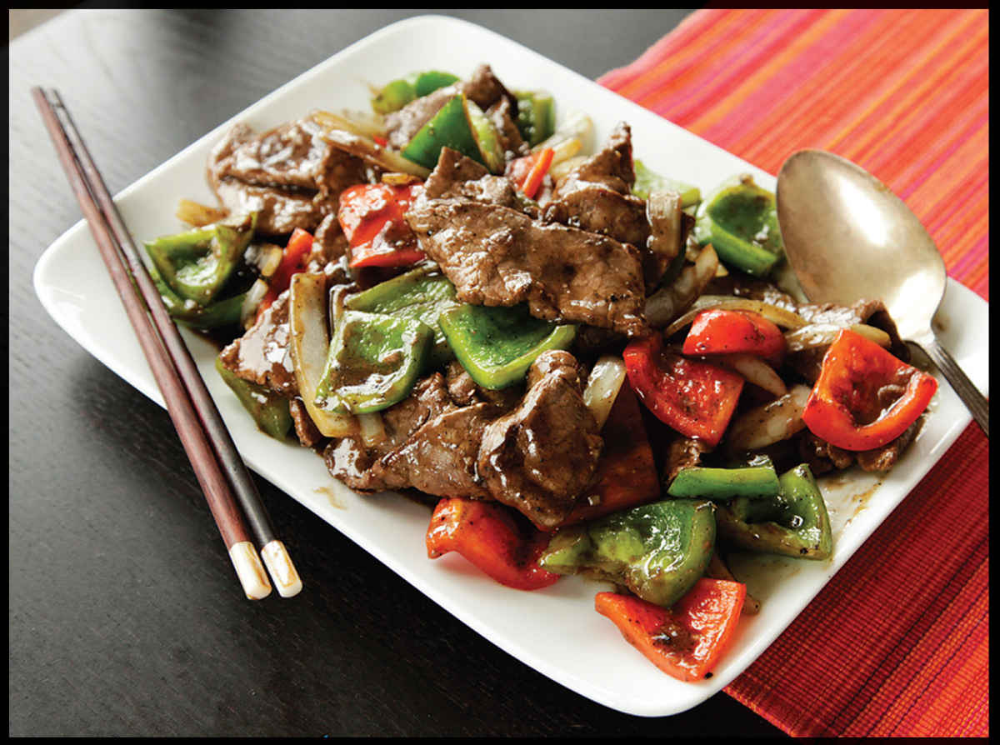
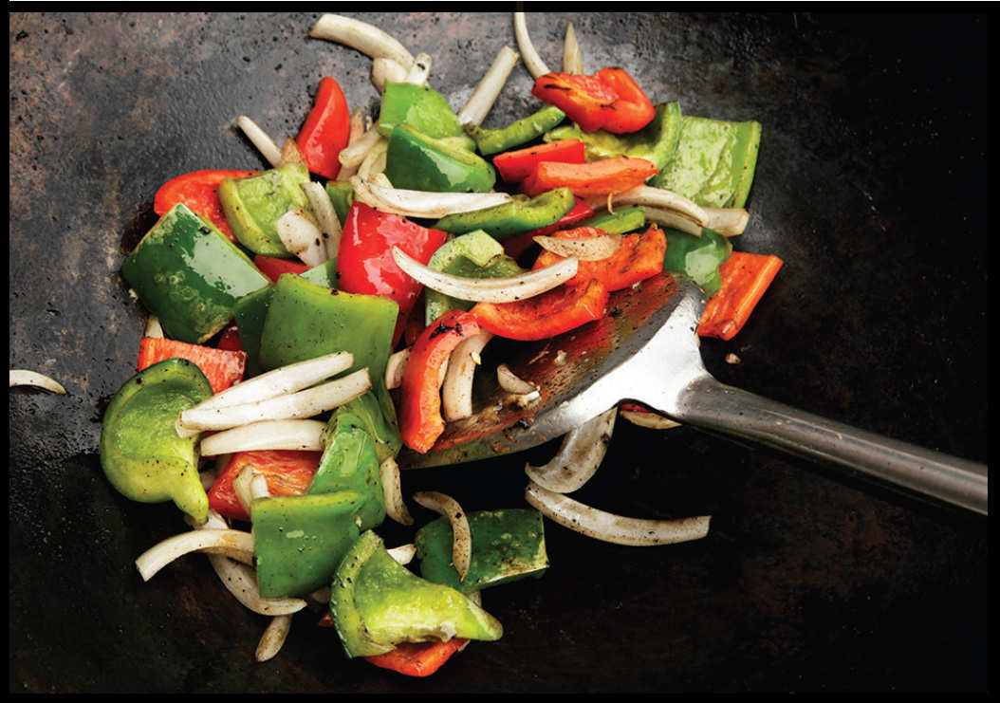

PEPPER STEAK
|
Yield Serves 4 |
Active Time 15 minutes Total Time 30 minutes |
INGREDIENTS
For the Beef:
1 pound (450 g) beef flank, skirt, hanger, or flap, cut into ¼-inch-thick strips
½ teaspoon (2 g) baking soda
2 teaspoons (10 ml) light soy sauce or shoyu
2 teaspoons (10 ml) Shaoxing wine
½ teaspoon (2 g) sugar
½ teaspoon (1.5 g) cornstarch
For the Sauce:
⅓ cup low-sodium homemade or store-bought chicken stock or water
1 tablespoon (15 ml) light soy sauce or shoyu
2 teaspoons (10 ml) dark soy sauce
2 tablespoons (30 ml) Shaoxing wine
1 tablespoon (15 ml) roasted sesame oil
1 tablespoon (12 g) sugar
1 tablespoon (about 8 g) freshly ground black pepper
For the Cornstarch Slurry:
2 teaspoons (6 g) cornstarch
1 tablespoon (15 ml) water
For the Stir-Fry:
3 tablespoons (45 ml) peanut, rice bran, or other neutral oil
1 medium green bell pepper, cored and cut into 1-inch squares (about 5 ounces/150 g)
1 medium red bell pepper, cored and cut into 1-inch squares (about 5 ounces/150 g)
1 medium onion, cut into 1-inch strips from pole to pole (about 6 ounces; 180 g)
2 medium garlic cloves, minced (about 2 teaspoons/5 g)
2 teaspoons (5 g) minced fresh ginger (about ½-inch segment)
3 scallions, whites only, minced
Kosher salt to taste
There was no Yelp or Serious Eats or even a Zagat guide when Lawton Mackall published Knife and Fork in New York, but if the Internet had existed, the book would most likely have been a series of blog posts rather than a single volume. The seventeenth chapter, “Pagoda Provender,” mentions “green-pepper steak with tomatoes and onions” right in between “steamed fish prepared with soy beans and ginger sauce” and “egg rolls served with slices of roast pork and a secret sauce.”
I’ve always known “Green-Pepper Steak” as simply Pepper Steak or Black Pepper Beef, and I’ve never seen it cooked with tomatoes, but a quick Internet search of recipes turns up a good number of recipes that do in fact add tomatoes to the basic stir fry of sliced beef, bell peppers, and onions. If you do choose to make it with tomatoes, I find that cherry tomatoes cut in half or small Roma tomatoes split into quarters work better than larger beefsteak tomatoes, which turn watery when stir-fried (this is a good thing for a moist dish like Home-Style Tomato and Scrambled Eggs, here, but not for a dryer stir-fry like this one).

DIRECTIONS
1For the Beef: Place the beef in a medium bowl, cover with cold water, and vigorously agitate it. Drain through a fine-mesh strainer set in the sink and press on the beef with your hands to remove excess water. Return the beef to the bowl, add the baking soda, and vigorously massage the baking soda into the meat, lifting the meat, throwing it down, and squeezing it for 30 to 60 seconds. Add the soy sauce, wine, sugar, and cornstarch and roughly work the marinade into the meat for at least 30 seconds. Set aside to marinate for at least 15 minutes and up to overnight.
2For the Sauce: Combine the chicken stock or water, soy sauces, wine, sesame oil, sugar, and pepper in a small bowl and stir together until homogenous. Set aside. Combine the cornstarch and water in a separate small bowl and stir with a fork until the cornstarch is dissolved.
3BEFORE YOU STIR-FRY, GET YOUR BOWLS READY:
4For the Stir-Fry: Heat a wok over high heat until lightly smoking. Add 1 tablespoon (15 ml) of the oil and swirl to coat. Add half of the beef and cook without moving it until well seared, about 1 minute. Continue cooking while stirring and tossing until lightly cooked but still pink in spots, about 1 minute. Transfer to a large bowl. Wipe out the wok and repeat with 1 more tablespoon (15 ml) of the oil and the remaining beef, adding the beef to the same bowl.
5Wipe out the wok and return it to high heat until lightly smoking. Add the remaining tablespoon (15 ml) oil and swirl to coat. Add the peppers and onions and stir-fry until lightly charred in spots and the vegetables are tender-crisp, about 1 minute.
6Return the beef to the wok and add the garlic/ginger/scallion mixture. Cook, tossing and stirring until fragrant, about 30 seconds. Stir the sauce and add to the wok by pouring it around the edges. Stir the cornstarch slurry and add a splash. Cook, tossing, until the sauce thickens and the beef is cooked through, about 30 seconds longer. Adjust the sauce consistency with more cornstarch slurry if it is too thin or a splash of water if it is too thick. Transfer to a serving platter and serve immediately with steamed rice.
